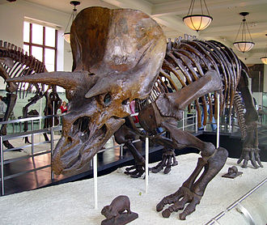

되돌아가기
- Definition
- Classification
- Biology
- 한국어 페이지
- 정의
- 일반적 특징
- 공룡의 종류
정의

분류학에서는 공룡을 "트리케라톱스와 근생 조류 및 이들에서 분기된 모든 자손을 아우르는 최근 공통 조상이 속해 있는 부류"로 보고 있다.
이는 메갈로사우루스와 이구아노돈의 공통 조상이 곧 모든 공룡의 최근 공통 조상이라는 것을 의미한다.
메갈로사우루스와 이구아노돈은 오언이 분류한 세 종류의 공룡 가운데 두 종류이다. 공룡은 사족보행을 한 용각아목, 이족보행을 한 수각아목, 딱딱한 등을 가진 곡룡류, 등에 돌기뼈를 가진 검룡류. 머리뼈가 부채 모양으로 퍼지고 뿔이 달린 각룡류, 오리 모양의 입이 특징인 조각류 등으로 나뉜다.
고생물학자들은 새가 공룡의 일종에서 진화한 것으로 보고 있으며, 새와 공룡을 같은 분지로 다룬다.
이러한 입장에서 보면 공룡은 완전히 멸종한 것이 아니다. 고생물학에서는 새가 용반목 수각아목 마니랍토라의 일종인 코에루로사우리아에 속한 조상으로부터 진화한 것으로 파악하고 있다.